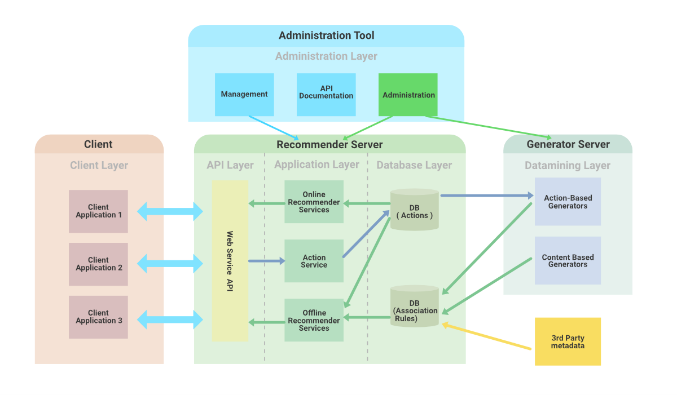
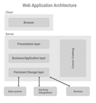

Intro
When browsing on your favorite web browser ,the lingering thought of how the web application must have crossed at some point. A brief answer to that question is , the request you typed for is then sent to the web servers , web-server processes the request and performs all the necessary logic which is sent to the web browser and displayed on the screen.
Web applications have complex architectures that have many components and layers , when a request is inputted each of these layers have to be crossed before displaying data back onto the screen. (Anuupadhyay, n.d.)
What is Web Application Architecture ?
Web Application is a program that runs on the browser, it has 3 main characteristics:
- Addresses problems (finds information)
- Interactive
- Works with the Content Management System
Web Application Architecture controls communication between client and server parts of a program, making sure user requests and interactions between applications, user interfaces , middleware systems , databases ,servers and browsers. The frameworks maintain the relationship between these elements , regardless of application size or complexity.
The Web application must address reliability, scalability, security, and robustness due to high internal network traffic volume. The code provided to the browser is crucial indicating how to react to user inputs, this includes sub-components and external interfaces for a complete software program.
Client-Side and Server-Side
The web applications run both on the client-side and the server-side , when a user puts in a request there are mainly two programs that run:
- Code that runs on the browser per user input.
- Code in the server that responds to HTTP requests.
Developers define the functions of server-side code and browser-side in web applications. Server-side code is written in the languages like python , JavaScript# ,PHP and ruby on rails , is responsible for creating user-requested pages and storing data. This is not visible to the end-user , except for malfunctions.
Client-side code, consists of HTML , CSS, and JavaScript , is run by the browser and can be viewed and edited by the user. It communicates to the server through HTTP request and cannot read files off a server directly.